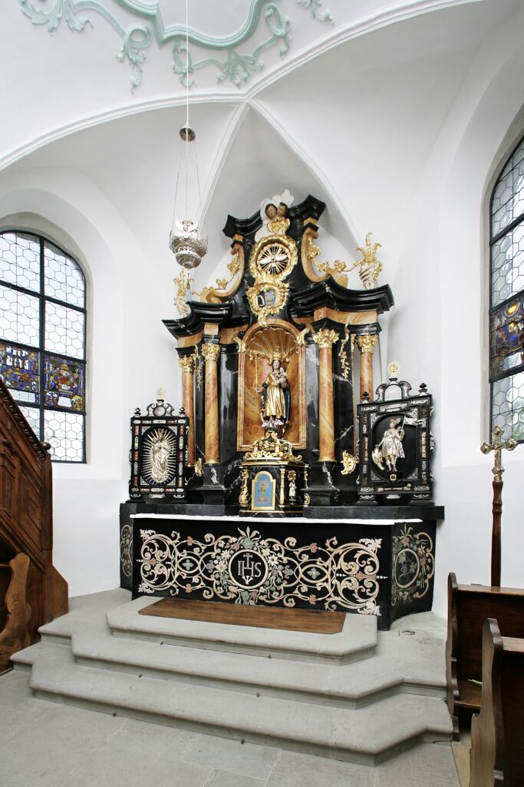
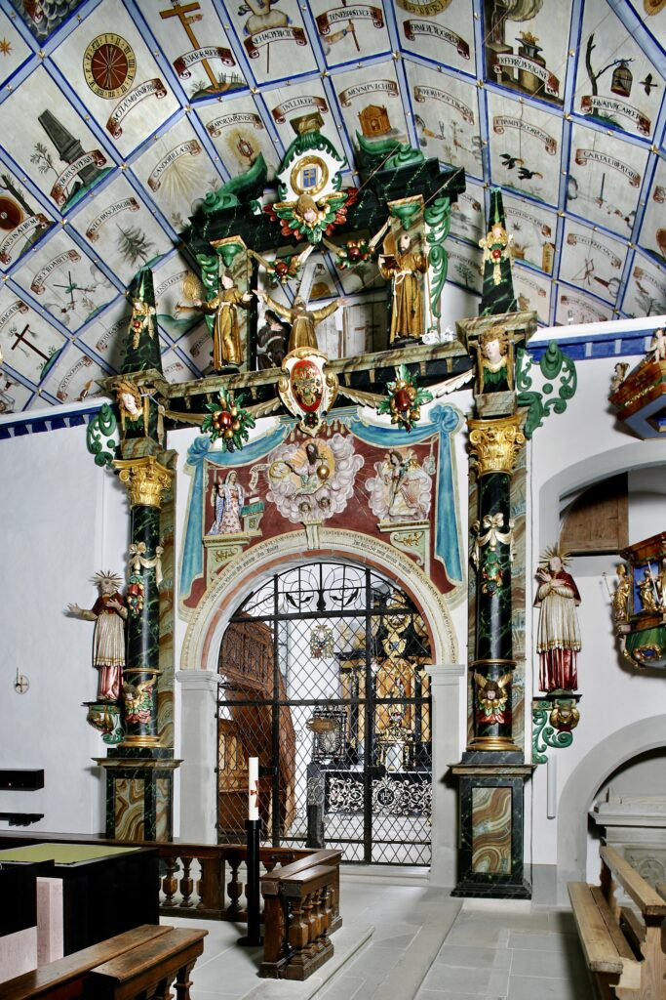
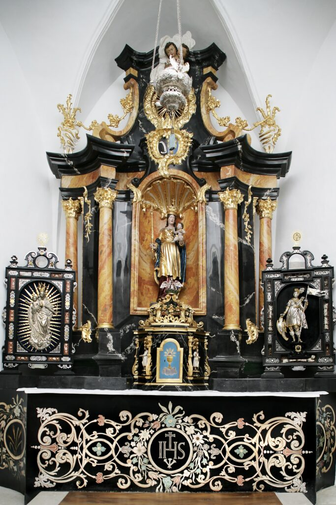

1 – Liebfrauen- oder Sakramentskapelle
Die östliche Seitenkapelle steht auf dem Platz der Marienkapelle von 1621, die man ab 1651 der grossen Kirche einverleibte. Um 1760 wurde sie erneuert.
Der in Stuckmarmor ausgeführte Rokoko-Altar zeigt Maria als Himmelskönigin mit dem segnenden Jesuskind. Im holzgeschnitzten Tabernakel davor schloss man seitdem das Altarsakrament ein – daher der Name «Sakramentskapelle».
Beidseits davon sind die Reliquientafeln mit der «Patrona Lucernae» (Schirmherrin Luzerns) und St. Mauritius aufgestellt. Die in Silber getriebene Madonnenfigur ist eine Arbeit des Münchner Goldschmieds Gottfried Lang. Im Strahlenkranz erscheint Maria mit dem Jesuskind als erhabene Herrscherin und Immaculata mit vergoldeter Krone und Zepter auf einer Mondsichel stehend.


